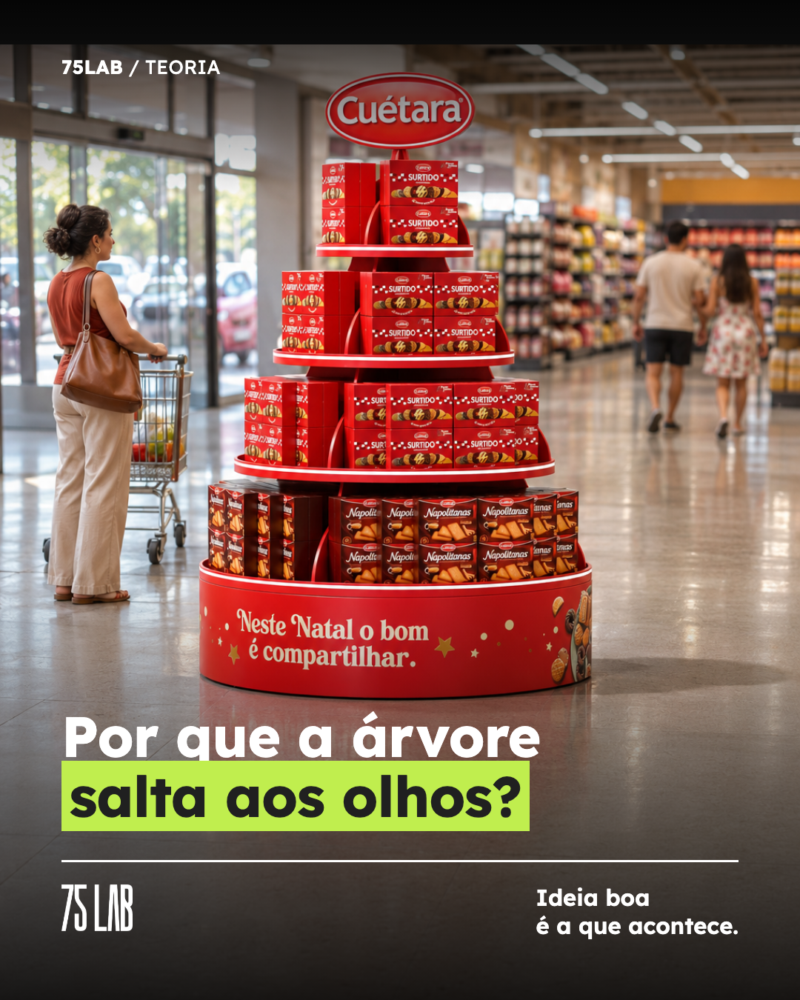
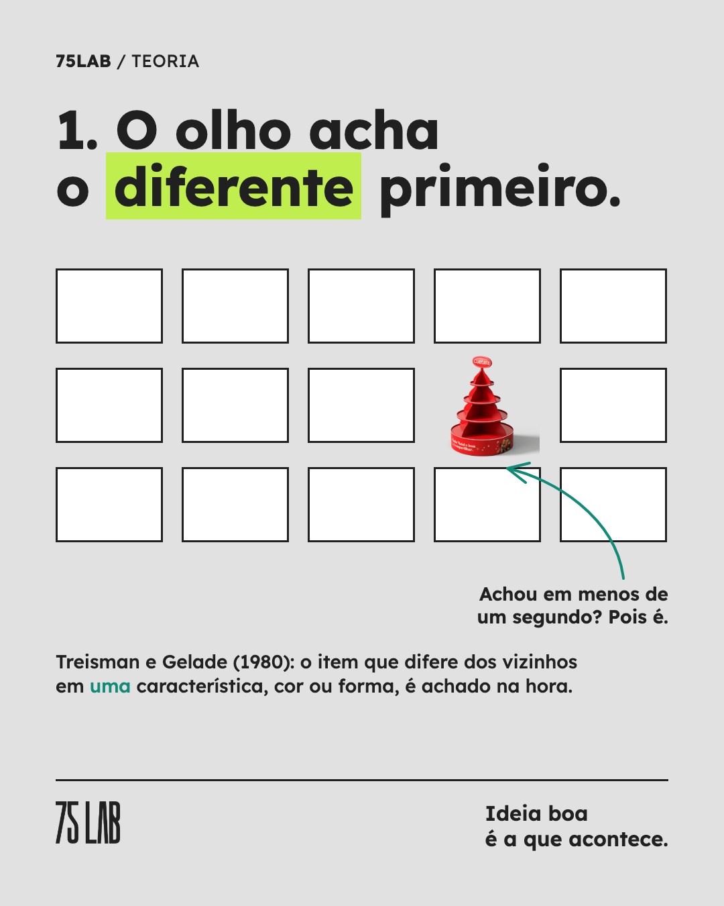
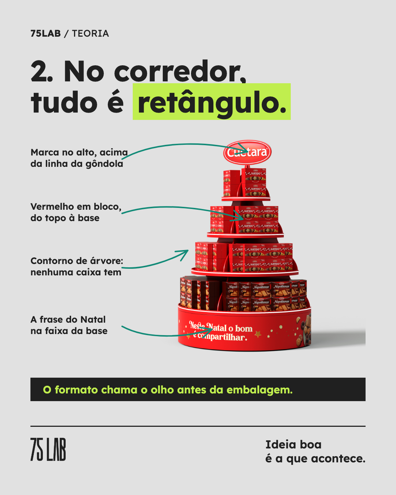
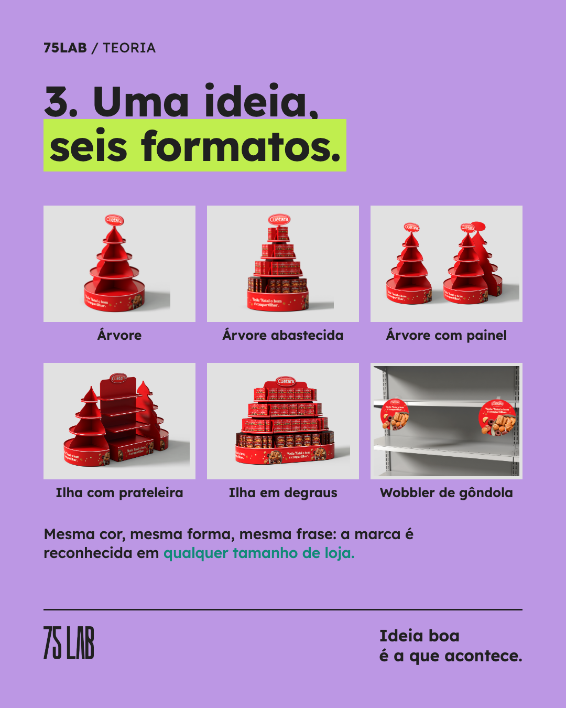
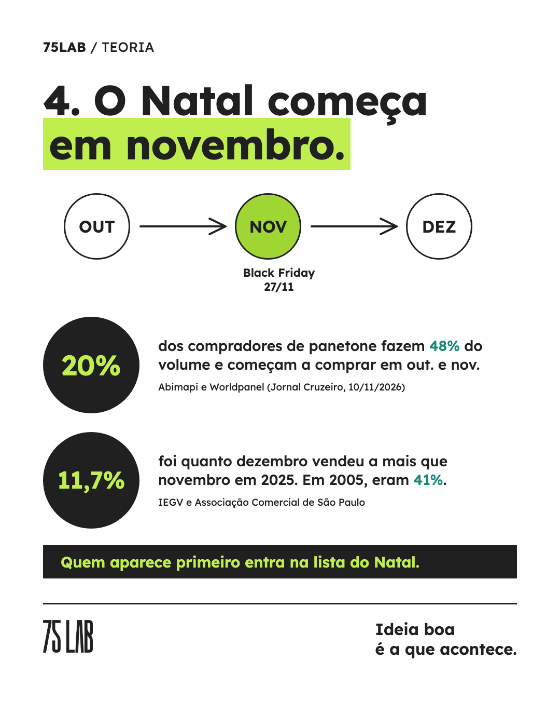
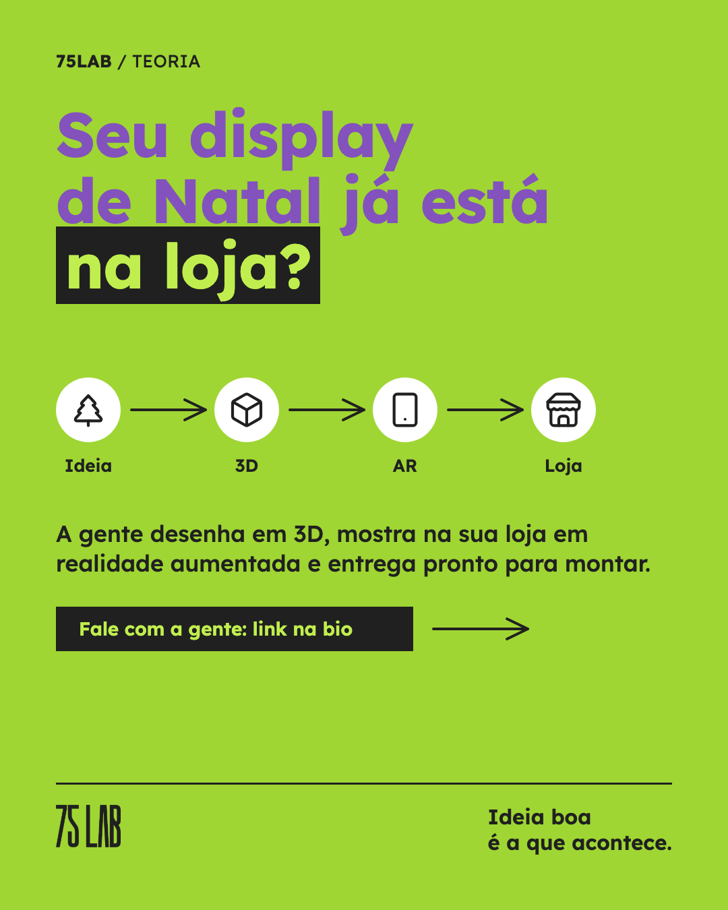
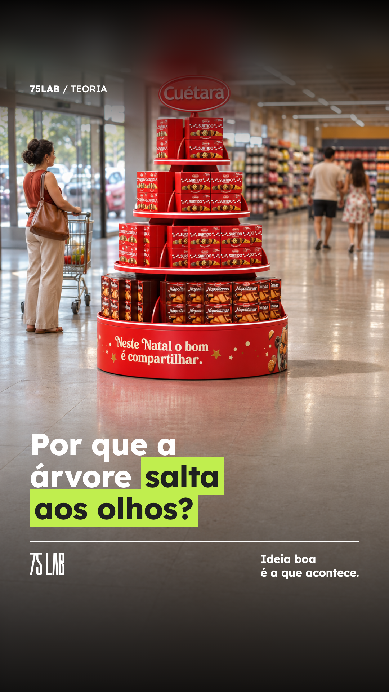
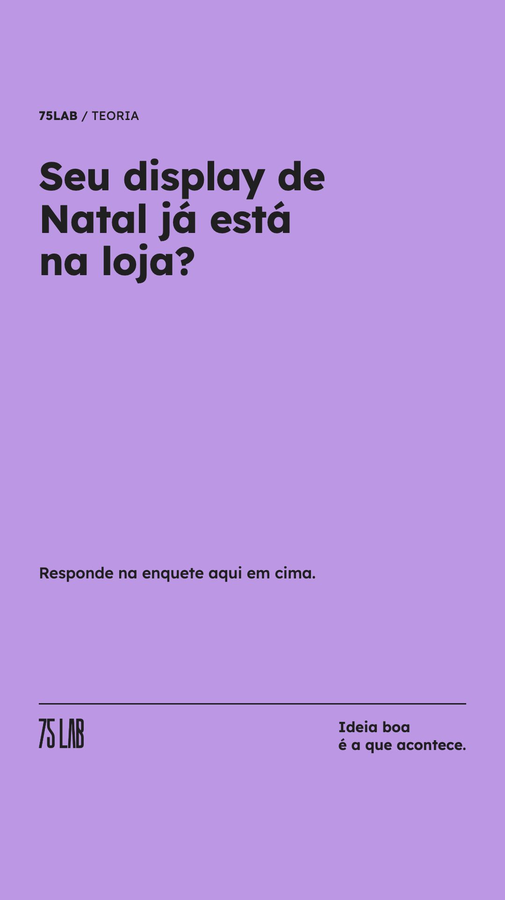
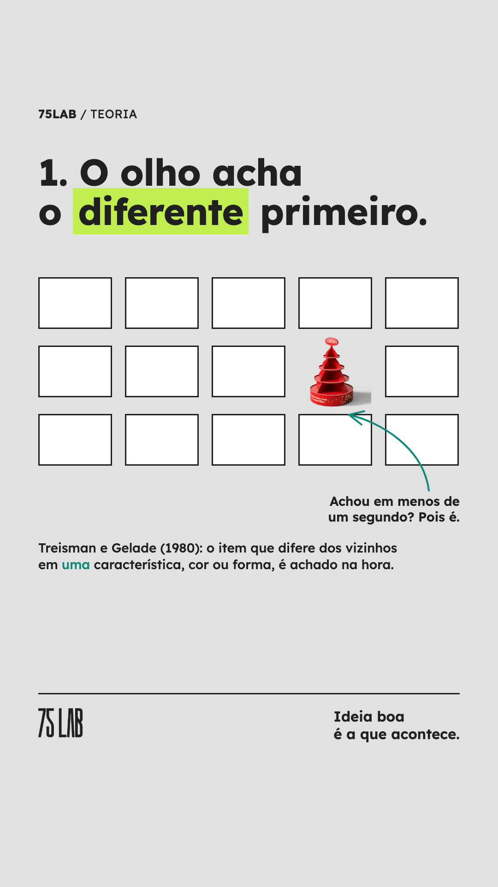
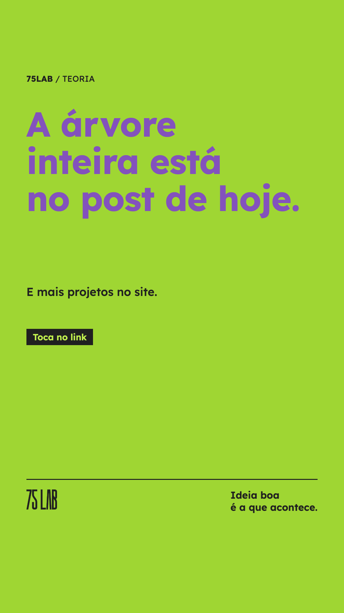

15/11 · teoria
Por que a árvore salta aos olhos: efeito pop-out no PDV de Natal (Cuétara)
No corredor, o olho acha primeiro o que é diferente em uma característica (Treisman e Gelade, 1980). Um display de Natal com forma própria aparece antes de qualquer caixa, e o Natal do shopper começa em novembro.
Toque em Aprovar, Pedir ajuste ou Não publicar em cada peça. Abre o GitHub com tudo preenchido: é só tocar em Submit new issue. No ajuste, escreva o que mudar. A rotina lê sua resposta na rodada seguinte (10h35, 12h35, 14h35 e 16h35) e o selo da peça muda aqui.
15/11 · sai a partir de 12:30
Instagram · carrossel












Legenda
Faz o teste no segundo card: quanto tempo você levou para achar a árvore? Em 1980, Anne Treisman e Garry Gelade mostraram que o olho acha na hora o item que difere dos vizinhos em uma característica só, como cor ou forma. Não importa quantos itens existam ao lado. Os psicólogos chamam isso de efeito pop-out. No supermercado, quase tudo é retângulo: gôndola, caixa, etiqueta. Por isso o display de Natal que desenhamos para a Cuétara tem forma de árvore: vermelho em bloco, marca no alto e a frase "Neste Natal o bom é compartilhar." na base. E a mesma ideia virou seis formatos, da árvore sozinha à ilha e ao wobbler de gôndola. E o momento é agora: segundo a Abimapi com a Worldpanel, 20% dos compradores de panetone fazem 48% do volume e começam a comprar em outubro e novembro. Mais projetos em 75lab.com.br/cases.html #trademarketing #pdv #natal #merchandising
Carrossel no feed
15/11 · sai a partir de 10:30

Texto da página da 75 LAB
Faça o teste da imagem: quanto tempo levou para achar a árvore? Em 1980, Anne Treisman e Garry Gelade publicaram a teoria da integração de características (Cognitive Psychology). Um dos achados: quando um item difere dos vizinhos em uma característica só, como cor ou forma, o olho o encontra na hora, não importa quantos itens existam em volta. É o efeito pop-out. No corredor do supermercado, quase tudo é retângulo. Daí a escolha que fizemos no display de Natal da Cuétara: 1. Contorno de árvore, que nenhuma caixa tem. 2. Vermelho em bloco, do topo à base. 3. Marca no alto, acima da linha da gôndola. 4. A frase do Natal na faixa da base. A mesma ideia virou seis formatos, da árvore sozinha à ilha e ao wobbler, para caber em lojas diferentes. E o calendário ajuda: segundo dados da Abimapi com a Worldpanel divulgados nesta semana, 20% dos compradores de panetone fazem 48% do volume e começam a comprar em outubro e novembro. O display de Natal que chega em dezembro já perdeu essa turma. Mais projetos em https://75lab.com.br/cases.html #trademarketing #pdv #natal
Texto do seu perfil
Toda vez que alguém me pede um display de Natal, faço a mesma pergunta: o que ele tem de diferente de tudo que já está no corredor? Tem uma explicação científica para isso. Anne Treisman e Garry Gelade mostraram, em 1980, que o olho acha na hora o item que difere dos vizinhos em uma característica só: a cor ou a forma. No supermercado, quase tudo é retângulo. Foi por isso que o display da Cuétara virou uma árvore: forma própria, vermelho em bloco, marca no alto e a frase "Neste Natal o bom é compartilhar." na base. E a ideia saiu em seis formatos, da árvore sozinha à ilha e ao wobbler. Se o seu Natal ainda está no briefing, vale correr: o shopper mais fiel da data começa a comprar em novembro. O case está em https://75lab.com.br/cases.html #trademarketing #pdv #varejo
Página e perfil no ar
15/11 · sai a partir de 14:30
Reels
Legenda
Por que a árvore salta aos olhos no corredor: o efeito pop-out (Treisman e Gelade, 1980) no display de Natal da Cuétara. Case completo em 75lab.com.br/cases.html #trademarketing #pdv #natal #varejo
Roteiro
3.0 s · 4.0 s · 4.2 s · 3.8 s · 4.2 s · 3.6 s · Seu display de Natal já está na loja? Projetos reais em 75lab.com.br/cases
Reels no perfil
15/11 · sai a partir de 12:30
Stories








Indicação
Tela 1: sem sticker Tela 2: Enquete no meio da tela: "Já está" e "Ainda não" Tela 3: sem sticker Tela 4: Link: https://75lab.com.br/cases.html
Enviado ao seu e-mail para postar pelo app
15/11 · sai a partir de 10:30
E-mail marketing
O e-mail como chega na caixa (role dentro do quadro)
Abrir o e-mail em tela cheia ↗
Assunto
Panetone, Black Friday e por que a árvore salta aos olhos
Linha de apoio
Notícia, insight, teoria e case: o Natal do shopper começa em novembro, e a forma da peça decide quem ele vê primeiro.
Edição #03: 600 pessoas; encerrada, e-mail agora é semanal
Fontes